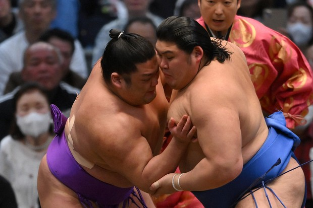
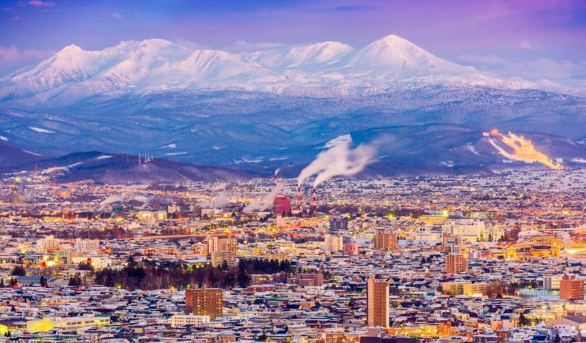
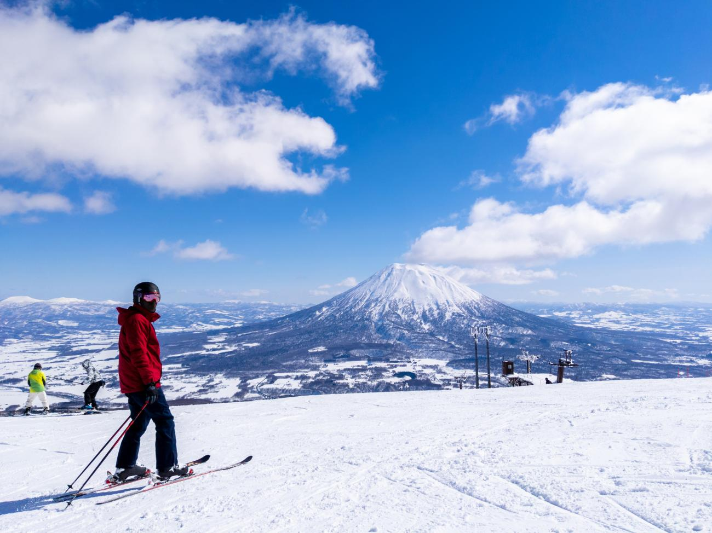

My Dream Destination!
By Matthew Osorio
My dream destination is going to Japan. I've always wanted to go there as it is the birthplace of my favorite video game company Nintendo.
Info about Japan
Super Nintendo World is one of the many places I would like to go to in Japan.
It is located in Osaka, Japan. Here is an image of Super Nintendo World.

Nintendo World
Another attraction in Osaka is sumo wrestling. Japan is known for their elite competitors in wrestling.

If you want to check out sumo wrestling click here!
Another great place to visit is Hokkaido Japan.
It is known for it's snowy nature, and is the northernmost city in Japan, hence why it is the coldest.

The image displayed above shows the beauty of this Japanese prefecture. The lights and city combined with the snowy environment make this city a must-go-to in Japan.
Hokkaido is known for their mountains where people love skiing or snowboarding.

Info on Hokkaido
The last place I want to visit is Okinawa, Japan. Oppositely to Hokkaido, it is known for their tropical environment and their waters popular for looking emerald green.

Their tourist attractions are great, and their beaches are pristine.
If you want to visit Okinawa, check out this website!
Link to Visit Okinawa here